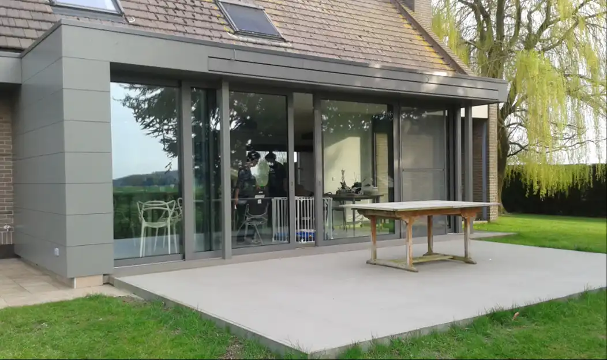
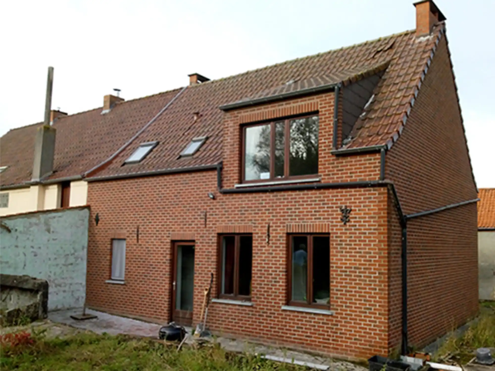
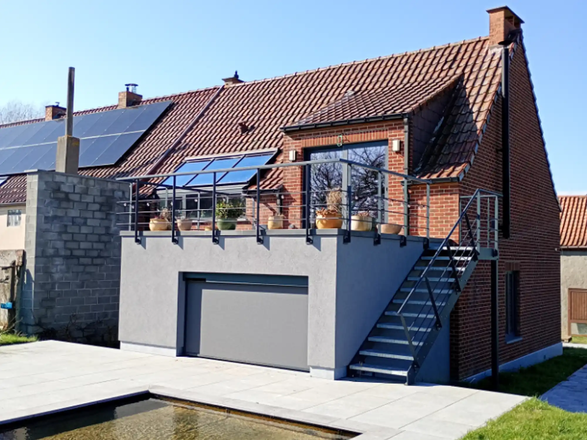
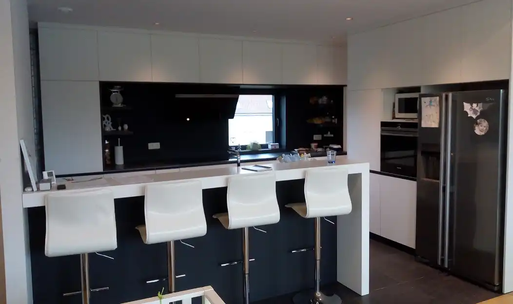
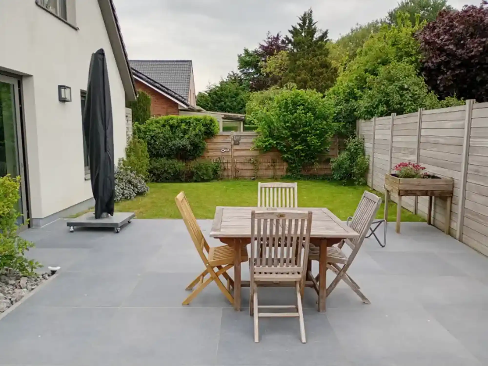
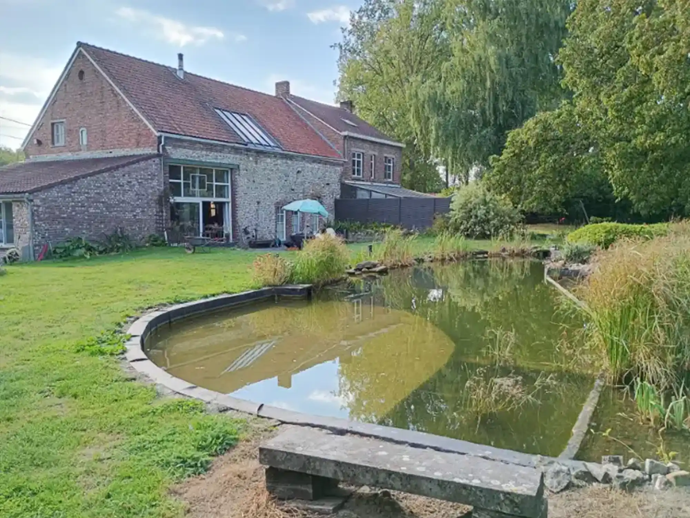

Services proposés
— Extensions extérieures

La petite extension (16m2) de cette maison contemporaine permet d'agrandir considérablement la cuisine et la salle à manger d'origine ; le mur de façade arrière ayant été complètement abattu. Avec cette extension entièrement vitrée, les maîtres de l'ouvrage ont le sentiment de vivre en permanence en contact avec le jardin.

Avant

Après
Pour la transformation complète de cette ancienne ferme, l'habitude de vie a été inversée. En effet, compte tenu du cloisonnement existant au rez-de-chaussée, le choix a été fait d'y aménager les chambres sans trop de démolitions. A l'inverse, l'étage n'étant absolument pas cloisonné, il est apparu évident d'y aménager un grand living avec cuisine ouverte. L'extension réalisée est une chambre supplémentaire au rez-de-chaussée dont le toit terrasse profite agréablement au living. De cette terrasse, la vue est magnifique sur le jardin et le plan d'eau de 16m de long au pied de cette extension.
— Cuisine et Salle de bain

Avant de rencontrer un cuisiniste, l'architecte peut accompagner le maître de l'ouvrage pour organiser et établir un plan de cuisine adapté à ses besoins et à l'espace disponible.
— Aménagement paysager


Réalisation d'aménagements extérieurs sobres et contemporains, en travaillant les terrasses, cheminements, plantations et espaces de détente. Ces interventions permettent de créer une continuité harmonieuse entre l'habitation et le jardin, tout en privilégiant des espaces fonctionnels.